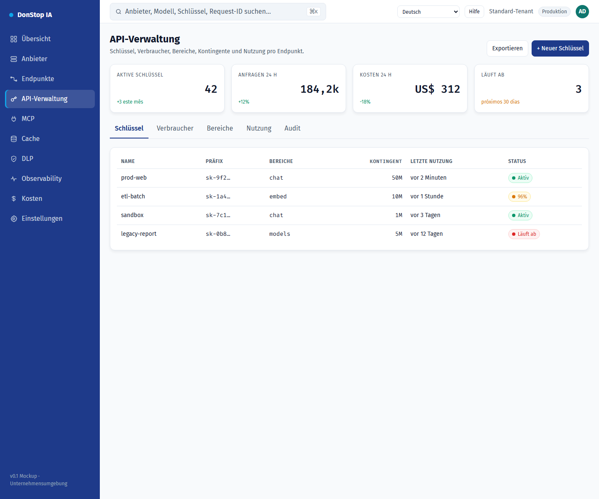

API-Verwaltung

Was diese Seite tut
Verwaltet API-Schlüssel, Bereiche, Kontingente, Ratenlimits, Ablauf und Nutzung pro Endpunkt.
Wann verwenden
Verwenden Sie diese Seite, um diesen Teil des Gateways zu prüfen, zu konfigurieren oder zu betreiben.
Schritt für Schritt
- Öffnen Sie API-Verwaltung über die Seitenleiste.
- Prüfen Sie die Kennzahlen und die Haupttabelle.
- Verwenden Sie die unten beschriebenen Aktionen; Änderungen gelten sofort.
- Öffnen Sie einen Schlüssel für Bereiche und Nutzung oder erstellen Sie mit + Neuer Schlüssel einen neuen.
Felder und Aktionen
| Feld oder Aktion | Auf dieser Seite sichtbare Bezeichnung oder Aktion. |
|---|---|
| + Neuer Schlüssel | Auf dieser Seite sichtbare Bezeichnung oder Aktion. |
| Schlüssel | Auf dieser Seite sichtbare Bezeichnung oder Aktion. |
| Bereiche | Auf dieser Seite sichtbare Bezeichnung oder Aktion. |
| Kontingent | Auf dieser Seite sichtbare Bezeichnung oder Aktion. |
| Letzte Nutzung | Auf dieser Seite sichtbare Bezeichnung oder Aktion. |
| Status | Auf dieser Seite sichtbare Bezeichnung oder Aktion. |
Häufige Fehler und Zustände
- Wenn Daten nicht geladen werden, versuchen Sie es erneut. Prüfen Sie Gateway und Anbieter, wenn der Fehler bleibt.
- Wenn eine Aktion deaktiviert ist, prüfen Sie Rolle und Tenant-Bereich.
- Leere Zustände sind vor der ersten Anfrage normal; folgen Sie der Handlungsaufforderung.
Verwandte Leitfäden
Screenshot von API-Verwaltung auf Deutsch.